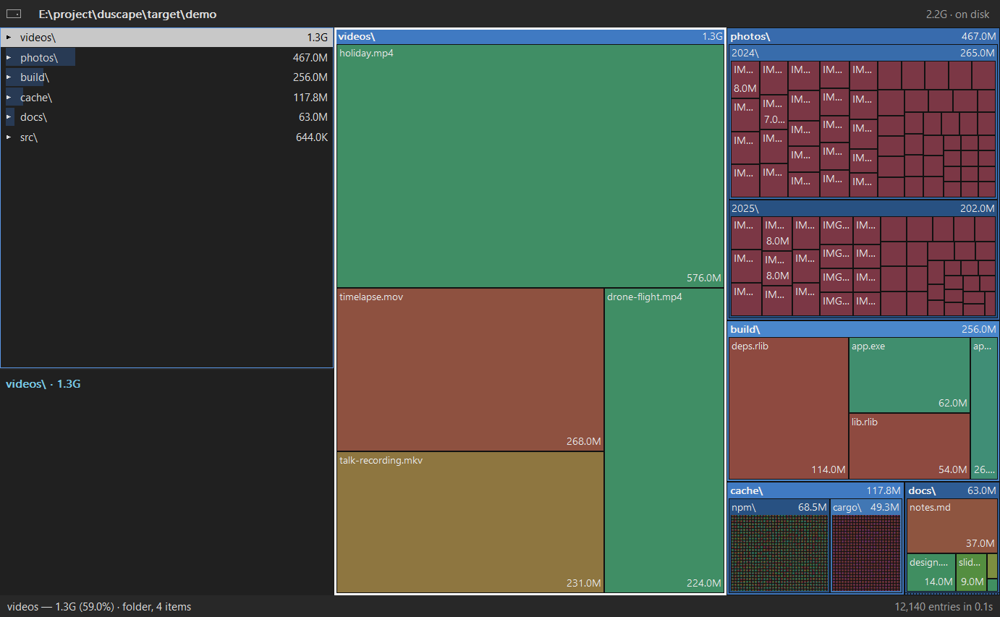
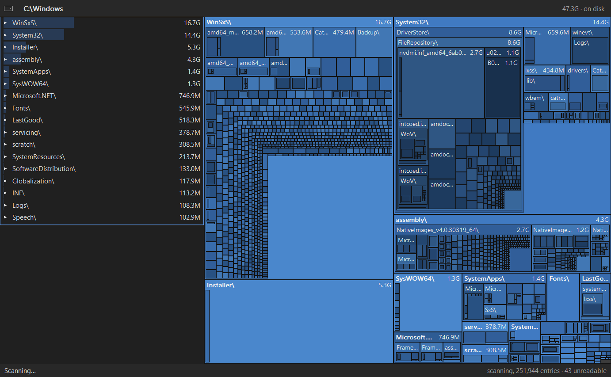
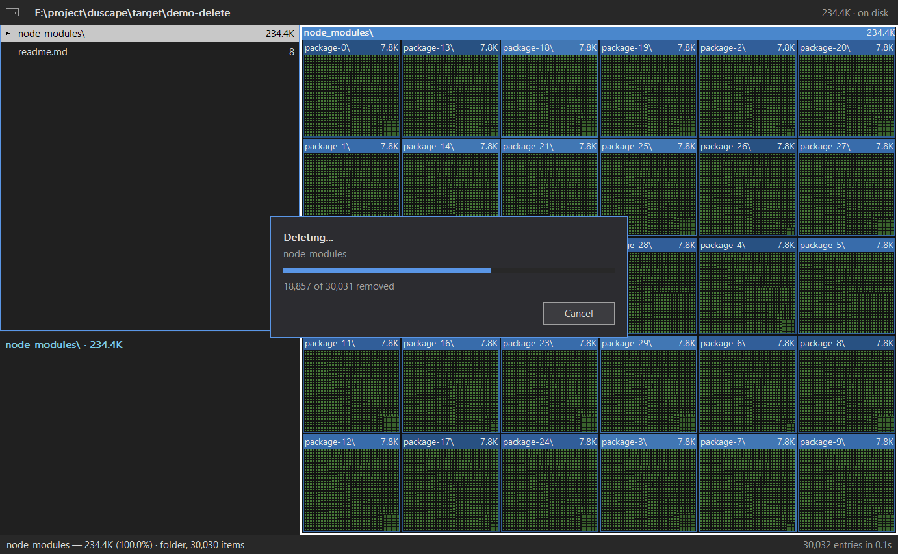
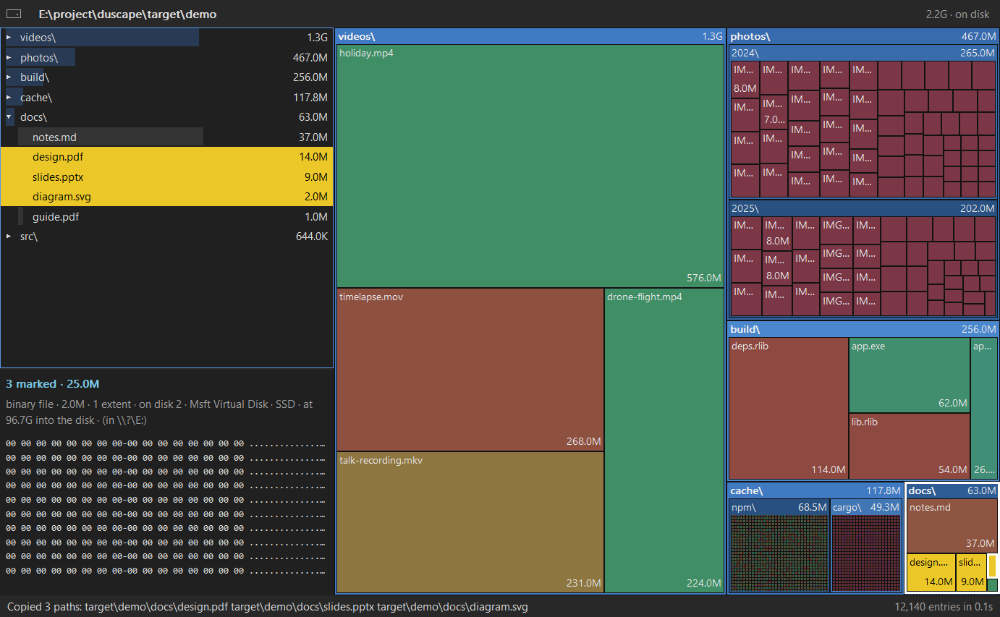
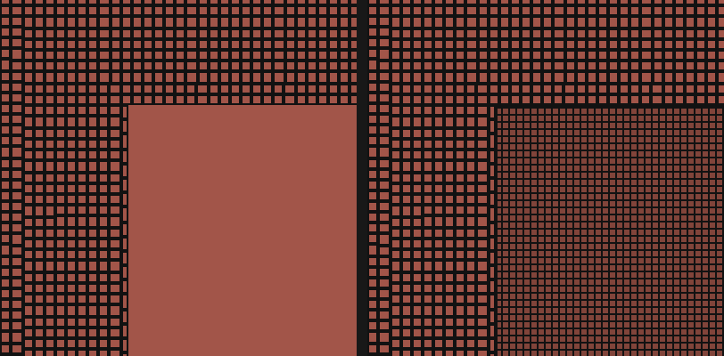

Walker workers read directories. A focus hint moves the folder currently on screen to the front of the queue.
An interactive systems tour
Make the disk wait.
Never the person.
Duscape turns a live filesystem walk into a useful picture without making the window wait for the disk, the tree, or a preview to finish.
Follow one scanONE WALK
MANY VIEWS
MANY VIEWS
src
assets
cache
large file
FIG 01 · THE SHARED MODEL
Rust · platform-native I/O · shared accountingArchitecture, with the measurements left in
01 / The shape of the work
One pipeline, separate clocks.
The scanner owns slow I/O. Builders own private trees. The viewer thread owns interaction and paint. Bounded messages let each side make progress without handing a million-entry backlog to the screen.
TRACE A ROUTE
ROUTE / LINUX
getdents64 + statx, in parallel; optionally read ext4 metadata from the device as root.
01 / WALKLinux walkerdirectory batches from getdents64 + statxWORKER POOL · 3/CORE, MAX 32
C
02 / SCAN FAN-OUTDirEntrieseach directory feeds two paths
OUTLINE→ UI nowdepth-capped summariesA · COARSE NOW
BUILD BATCHES→ shard queuesfull directory entries
C
03 / BUILDPrivate treesone FileTree per shardBUILDERS · 4 SHARDS
C
04 / FINISHMerge + replayreconcile shared-block ledgerB · COMPLETE AFTER
MERGE
C
05 / INTERACT + PAINTLinux window / TUIone state/paint thread; deferred work after idleUI · 1 THREAD
UI
CShared bounded inboxes carry batches. The scanner fans out: outline summaries reach UI early; full directory batches feed builder shards.
A → FIRST USEFUL FRAMEB → FULL TREE + IDLE PASSES
Builders own private trees in parallel; the final merge and replay is one serial finish step.
One interactive thread owns state and paint. Input stays responsive while I/O, previews and deferred refinement run elsewhere.
ACoarse now
The outline branch reaches the UI while scanning continues; folders appear before the complete tree.
BComplete after
Builder shards finish, then one merge/replay lands the full tree; FIEMAP and deferred layout follow.
CBound every queue
C marks shared bounded channels between producers and consumers, not a private pipe per worker.
02 / The scanner family
Same contract.
Different disks.
Every backend yields per-directory batches. That seam keeps filesystem-specific tricks below the model, where they can be measured and refused without changing what a viewer consumes.
LINUX / GENERIC PATHSCANNERS · 01
A directory stream, then a stat per entry.
Linux has no call that returns names and sizes together. duscape reads names with getdents64 and asks statx for sizes, identity and link counts. A worker pool overlaps that per-entry work across directories.
HOW IT STAYS FAST
Three workers per core keep cold reads in flight; directory batches feed sharded tree builders. A later FIEMAP refinement checks small-file shared extents on XFS and btrfs.
WHAT IT GIVES UP
The generic path pays one metadata call per entry. Raw ext4 reads can be stale by seconds, require privilege, and are not faster warm on every machine.
getdents64 → statx → DirEntries → parallel::build_tree
Filesystem checks prevent duplicate bind mounts, pseudo filesystems and network mounts from masquerading as local space.
↳
One honest seam: a walker emits the same directory facts; the shared tree, hard-link ledger, live outline, rescan protocol and viewers do not need to know how those facts were found.
03 / The viewer family
One model. Native hands.
The desktop windows share state and layout policy. Each platform keeps only the input, window-system and paint code that genuinely belongs to it.
VIEW / 01PRIMARY
Terminal
ratatui · crossterm
One terminal thread owns app state and renders on change. Input, scanning, preview work and the help-line ticker report instructions over channels. The grid uses terminal cells; nesting is cached by board generation.
FAST BY rendering only when something changed
viewers/tui/ · ui/grid/
VIEW / 02NATIVE
Windows
Win32 · GDI · DIB
A double-buffered pixel surface shares the common Viewer state. GDI measures text once, draws it with ExtTextOutW, and fills treemap pixels directly. NTFS volume roots can switch to the MFT when the sample says the table is worthwhile.
FAST BY avoiding per-tile GDI overdraw
viewers/windows/src/win/
VIEW / 03NATIVE
macOS
AppKit · objc2
AppKit draws the shared tree and nested map. Platform frameworks load when the window starts, not when the CLI launches. A saved scan streams onto screen, catches up through FSEvents, then fills trimmed small files.
FAST BY showing saved state before catch-up
viewers/macos/src/mac/
VIEW / 04NO TOOLKIT
Linux desktop
Wayland / X11 · software canvas
A software framebuffer is presented through pure-Rust Wayland or X11 backends. ab_glyph rasterizes system fonts; a bounded first paint defers deep labels and specks until input settles. No GTK, Qt, libwayland or Xlib at runtime.
FAST BY drawing one owned canvas, then presenting it
viewers/linux/src/ · viewers/shared/
VIEW / 05PORT
MS-DOS
16-bit real mode · FASM
A hand port, not a binding: scan, treemap, navigation and preview rewritten for a 286, with software IEEE doubles and text-mode colors. The Rust layout is its reference, and fixtures compare tile placement.
TRADEOFF tiny footprint, separate implementation
viewers/dos/ · make dos
VIEW / SHAREDDESKTOPS
Shared window state
Viewer · Layout · passes
Selection, tree rows, nested hits, marks, delete prompts, rescans and preview generations live once in duscape-viewer. The UI toolkit paints and reports input; policy stays testable on every platform.
BOUNDARY behavior shared, paint native
viewers/shared/src/state.rs

≠
“Shared” does not mean “one renderer.” It means every desktop viewer inherits the same decisions about what is selected, what a nested tile means, and when expensive work may wait.
04 / The numbers changed the design
Keep the failed runs.
These are not universal rankings. They are measurements with a machine, filesystem and condition attached. The negative results are part of the architecture.
MACOS / APFS · M4 PRO
59.9sbefore duplicate-volume skip
→36.5safter, whole-disk scan
Firmlinks made the data volume reachable twice. The fix halved entries from 20.3M to 10.4M and stopped the total being about 1.6× used space. A lean attribute request alone was slightly slower on a single-volume tree.
STRUCTURE BEAT MICRO-OPTIMIZATION
LINUX / EXT4 · ROOT
1.7×cold speedup on VM
↔6–40%cold gain on NVMe
On the VM the device walker is 1.7× faster cold than the same-privilege kernel walk. Bare-metal NVMe is different: it loses 20–30% warm, while cold gains only 6–40%. Sequential parsing can lose to parallel statx.
CONDITIONAL PATH, NOT A LAW
WINDOWS / NTFS · ELEVATED C:\
6.1swarm directory walk
→3.7swarm MFT route
Reading the table sequentially cuts per-entry kernel work on a whole volume. But the same rule loses on a subtree or large-file data volume, so duscape samples directories and uses the MFT only when its cost model says so.
FAST PATH WITH A GATE
WINDOWS / TREEMAP · 87K-FILE FOLDER
13.5msrow inspected in full
→5.9msrow ends decide squarify
With largest-first entries, a row's two ends determine its worst ratio and renderability. The pixel grid can hold tens of thousands of items; scanning every item in every row made the same layout quadratic-looking in practice.
ALGORITHM SHAPED BY THE PIXEL GRID
MACOS / SAVED SCAN · 8.1M ENTRIES
28sfresh scan
→0.5ssaved tree shown
Then catch-up completes in 2.6 s with totals identical to a fresh walk. The compact stream is about 3 bytes per entry; the first scan pays no measurable cost to record it.
SHOW · CATCH UP · FILL
DESKTOP PAINT · FIRST PASS
33msmaximized first frame
→7msdeferred deep work
Nesting, tiny-file specks and labels adapt to a 10 ms relayout budget. The first useful picture is quick; the full layout and paint arrive after 60 ms of idle time.
DEFER, DO NOT DROP
LAB NOTE / NEGATIVE RESULTS
Good ideas that lost to measurement.
Dead ends stay visible so the next optimization starts one step further along.
×io_uring statxLinux · batching looked promising3.8× slower
Submission overhead and the way the kernel handled these metadata requests lost to plain statx. It is listed as not worth revisiting, not a dormant “maybe faster” path.
×Adaptive worker countsLinux · ramp workers as they block3–4% slower cold
The cold ramp cost more than it saved on warm runs, where wall time was not builder-bound. Revisit only with a machine whose core count substantially exceeds what its disk can feed.
×More macOS workersAPFS · kernel contention14 workers worse
At eight workers the whole-disk scan used 185 seconds of system time against 7 seconds of user time; at fourteen, kernel time per entry rose from about 5 μs to 28 μs. The measured macOS cap is now six.
×Drain the scan channel on quitmacOS · a shutdown deadlock fix32.2s → 0.1s
Draining freed blocked senders by accepting all their sends, which let workers finish the entire disk. A stop flag checked by the queue fixed the actual cancellation behavior.
דCloser” total from a parser bugmacOS · plausible, completely wrong7.7M looked right
A missing directory attribute shifted the parser into name bytes or dropped a subtree. The scan total looked closer to expected; the 233,390 unreadable entries exposed the bug. Counts and errors are checks, not decoration.
05 / The window's frame
Sixty frames a second.
Then the rest.
The desktop viewers lay out and paint tens of thousands of tiles. Each frame does what fits in about 16 ms. The rest waits for a second pass, a worker thread, or the next frame. Here is what got them fast and looking right, and what didn't.
WINDOWS / LIVE SCAN · C:\USERS, WARM
125msbetween updates
→17.9msabout 56 fps
The view was starved, not slow: a relayout took 3 ms and a paint 8. The outline went out only every 4,096 entries, and the window waited 100 ms after it. Now the outline also flushes once a frame, and the window lays out and paints once a frame.
PACE BY THE FRAME, NOT THE BATCH
WINDOWS / FIRST FRAME AFTER A RELAYOUT
18–21msbefore
→11–14msC:\Windows, E:\, 87k-file folder
The first paint of a new layout stops labelling tiles after 4 ms of labels. Once input has been still for 60 ms, a second pass paints everything. A layout painted in full stays that way, so labels never come and go as you hover.
HURRY ONCE, FINISH ONCE
WINDOWS / PAINTING NESTED TILES
30msFillRect per tile
→13–17ms4k tiles, pixels written direct
Fills and frames write straight into the DIB section's pixels. A folder is filled only around what its entries cover, so each level no longer repaints its parent's whole area.
DO NOT PAINT A PIXEL TWICE
SHARED / STEADY LAYOUT · ~
8%of tiles jumping per relayout
→2%rows kept by name
A relayout of the same folder with new sizes keeps the last layout's rows (a Plan), so during a scan a growing folder swells in place instead of reshuffling every tile after it. At the scan's end, the area that moved fell from 14% to 2%.
LOOK STILL WHILE IT GROWS
SHARED / SMALL-FILE SPECKS · /USR, 2560×1400
10.8ms47k specks as tiles
→8.3msmotes, colour runs
Entries too small for a tile are laid straight into one-pixel motes, with no Tile object for each. A file extension's colour is looked up once per run of the same type, not once per speck.
A PICTURE, NOT A TARGET
WINDOWS / SMALL-FILES CORNER · LUMINANCE
2×as bright as the tiles
→±5%grid + 0.8 shade
Framed tiles show their colour inside a black frame; specks had none, so a corner of them read as a flat, glaring block. Specks now get the smallest tile's grid drawn over them and are darkened slightly, so the corner reads as more tiles of the same kinds.
MATCH THE TEXTURE, NOT THE AVERAGE

C:\Windows, from the outline: folders to six levels with running totals, laid out once a frame as batches arrive.


WinSxS\Manifests, 39k manifests of one kind. Before, the specks were a flat block twice as bright as the framed tiles beside them; after, the same corner within 5% of them.KEPT / WHAT KEEPS A FRAME SHORT
The tricks that stayed.
Most are shared by all three desktop viewers through duscape-viewer; where one belongs to a platform, it says so.
✓Bound the work by the screen, not the folderlayout · ranking · nestinga million entries cost what ten do
A folder is ranked only as far as its tiles have room. Nesting stops where an inside is too small for two of the smallest tiles. The total number of tiles is capped by the area at the smallest tile size. The board is laid out in one-pixel cells, so there are as many tiles as the window can show, and no more.
✓A deadline, and a second passNesting::deadline · room_cap · dust_deadline10 ms budget
Nesting goes a level at a time across every folder, so a deadline cuts the deepest levels rather than leaving the last folders out entirely. No folder may take more than 1,000 tiles in the first pass. Specks come only while the last full layout predicts they fit in half the budget. Everything else is drawn once input has been still for 60 ms, and each new change pushes that back again.
✓Indices, not pathsNestedTile::parent · tophalf the nesting's time
Cloning a path for every tile was half the nesting's cost. A nested tile now records its parent and top-level tile by index, and paths are worked out only when needed. The same rule applies to marks: which nested tiles are marked is computed once per paint, building paths only along the way to a mark, never per tile per mark.
✓Text measured once, drawn with ExtTextOutWWindows · GDIDrawTextW cost 1.5×
One GetTextExtentExPointW call gives where each character ends, so the ellipsis cut needs no second measurement. A font is selected only when it changes. The label font is the system message font, shrunk until the label band holds it whole.
✓Keep the back bufferWindows · BackBufferno page faults per frame
The DIB section is created again only when the window size changes. A fresh one every frame had its memory pages faulted in on every paint.
✓Paint when it is asked for, then let the paint happenWindows · PAINT_NOW · UpdateWindowone paint per relayout
Windows makes WM_TIMER and WM_PAINT only when the message queue is empty, and a warm scan posts a batch every few milliseconds. So the batch that arrives after the frame is up does the layout itself, the timer only covers the last batch of a burst, and UpdateWindow paints as soon as the re-entrancy guard is down. Before this, one live relayout in three was ever painted.
✓The system's frame loops run outside the guardWindows · HANDLED · DefWindowProcWresizes repaint live
Dragging an edge, maximising, or opening the system menu all run modal loops inside DefWindowProcW, which send WM_SIZE and WM_PAINT back into the window procedure. Messages the window doesn't handle go straight to the system, outside the re-entrancy guard. Reports from other threads that arrive during a modal loop are queued in order and handled afterwards.
✓Nothing that waits runs on the paint threadpreviews · deletes · rescans · drops40k entries deleted, window live
Previews decode on their own thread at the size they will be drawn, 100 ms after the pointer settles, and a newer request supersedes an older one. A delete runs on its own thread and shows a box with a count and a Cancel button if it lasts beyond 100 ms. A replaced tree is freed on a thread of its own, because freeing millions of nodes takes time. AppKit is loaded with dlopen when the macOS window opens, which took the terminal viewer's cold start from 0.41 s to 0.07 s.
✓Colour by name, never by ranktile_color · depth_shadeno colour changes mid-scan
Folders are blues; a file's colour comes from a hash of its extension, avoiding the blues and violets so a file never passes for a folder, in muted tones that white text reads on. Each level of nesting is 12% darker. The list's swatches use the same rule, so the list and the treemap agree as the listing re-sorts during a scan.
✓Fixed things stay fixedfree space band · unscanned stripthe free space never moves
A volume's free space is a band along the board's bottom, its size from the volume alone, so neither its place nor its shape changes during the scan. The unscanned space is a strip that narrows as the scan finds more. When the two were cut from one strip, the free space kept its area but kept changing shape, as if the free space itself were changing.
✓Points for policy, pixels for paintLayout · set_pixel_scaleone layout, any DPI
The shared viewer works in points, and each window multiplies by its own scale to draw and divides to hit-test, so click targets match on every platform. Tiles are laid out in one-pixel cells, with a 4-pixel smallest tile, while the label band and margins stay fixed sizes in points.
LAB NOTE / WHAT LOST
Tried, measured, undone.
Kept here so they are not tried again without a reason to think the numbers have changed.
×Lay out the live view per batchWindows · elevated whole-volume scanwindow froze
Dozens of batches a second at 15–25 ms each: the window answered nothing until the scan ended. A 100 ms timer after a burst fixed the freeze but capped the view at 8 fps. A 16 ms timer after each batch reached only 23 fps, because a Windows timer ticks every 15.6 ms and only fires on an empty queue.
×FillRect and FrameRect per tileWindows · GDI calls30 ms a frame
The nested treemap overdraws heavily, and a GDI call per rectangle cost more than the layout. Writing pixels directly, with a GdiFlush whenever GDI has drawn since, replaced it.
×Darken the specks to the tiles' averagesmall-files corner · colourread darker still
Scaled to the same average luminance as the framed tiles around it (52% of their colour on WinSxS\Manifests), the corner looked darker than them. The eye judges a framed tile by the colour inside its frame, not by the average. What worked was the grid's texture, plus a lighter shade.
×Hide labels while tiles slidemacOS · tweenunreadable motion
During a scan tiles slide almost all the time, and without labels the motion carried no information. Labels stay on while sliding (10.9 ms a frame on ~). The Windows and Linux windows do not animate yet: their second pass, after 60 ms of idle, would snap every slide to its end.
×Mark a folder for a range among its rowsshared · marks as namesthe folder, not the rows
Marks were top-level names, so a Shift range among the rows of a folder opened in place marked the folder itself. Marks are now row paths: a range runs over the rows as shown, closing a folder drops the marks inside it, and a delete takes a marked folder without also trying to delete marked rows inside it.
THE DESIGN RULE
Spend the frame on what
can change the frame.
Everything else gets its own worker, bounded message, cheap first pass, or explicit platform gate.
Back to the route